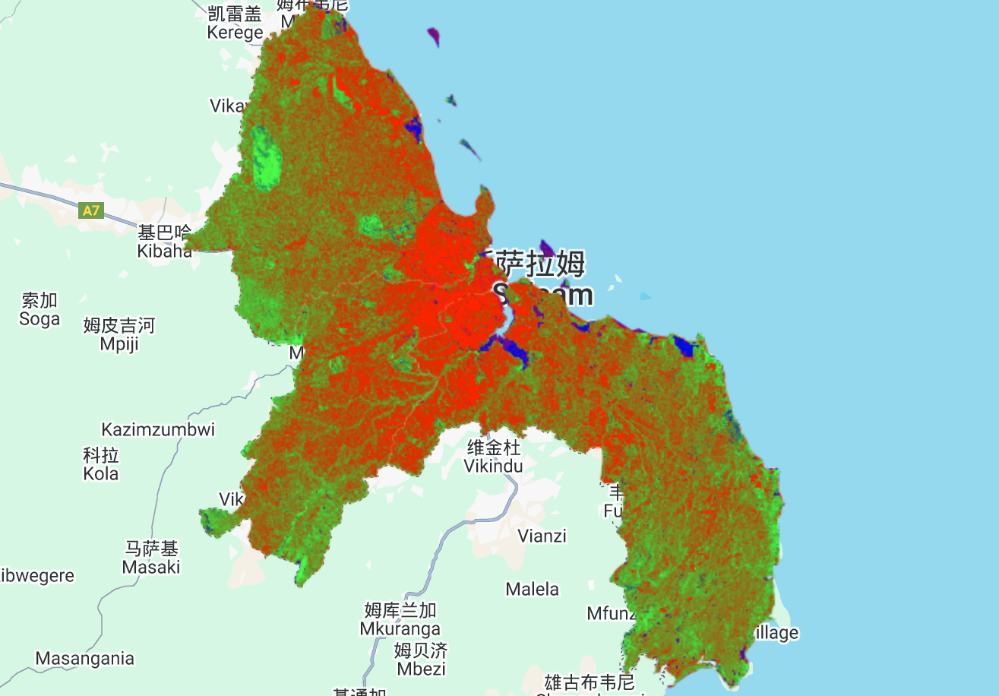
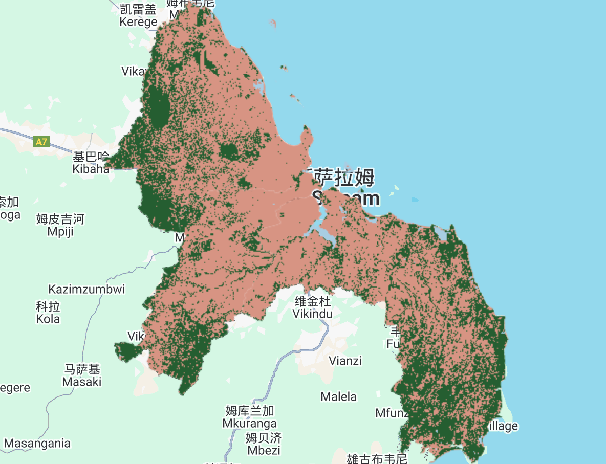
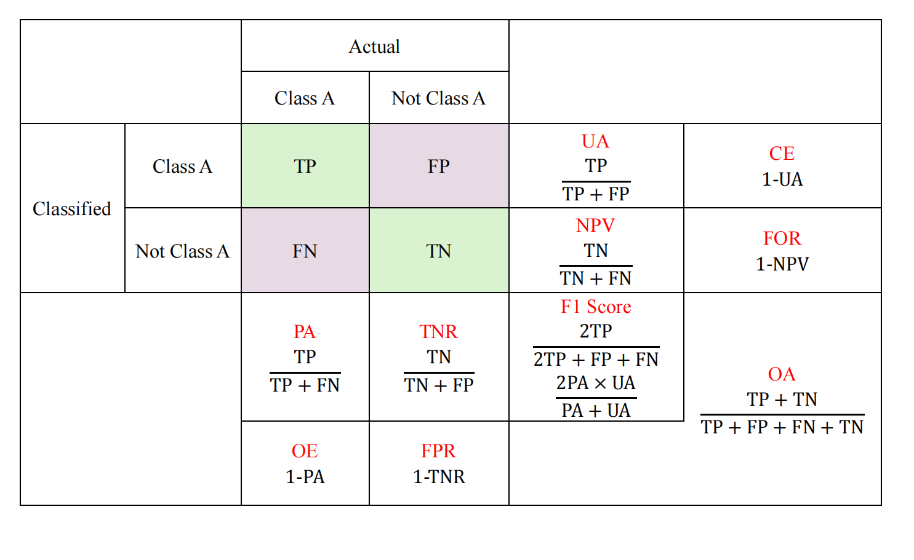
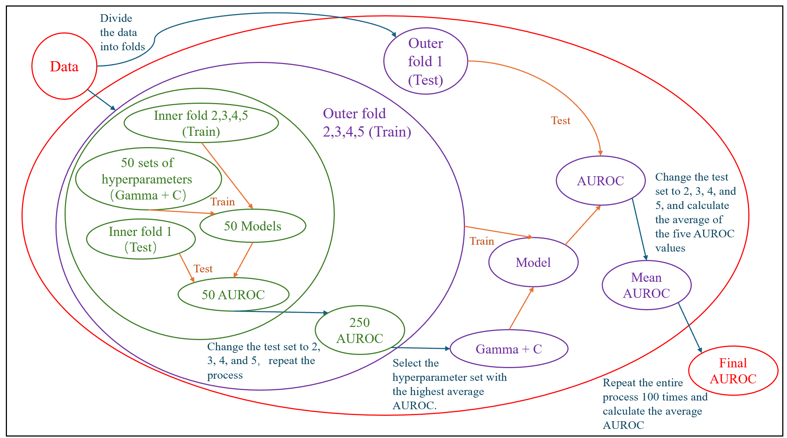

6 Classification Ⅱ
6.1 Summary
6.1.1 Object-Based Image Analysis
Object-Based Image Analysis divides an image into small regions—called superpixels—based on the similarity of pixel characteristics such as color, texture, and spatial location, and then performs classification. The use of superpixels can reduce computational load and enhance the preservation of spatial structural information.
Currently, the SLIC algorithm is one of the most commonly used methods for generating superpixels.
It is important to note that OBIA is less suitable for images with a high proportion of mixed pixels or unclear geometric structure.
6.1.2 Sub-pixel Analysis
This method assumes that the reflectance of each pixel is a linear combination of the reflectance values of several spectral endmembers—the pure spectral signatures of single land cover types.
In applications, most pixels are mixed. If too many endmembers are selected, the computational cost becomes high; if too few are used, the representation of land cover types may be inaccurate.
Figure 6.1 shows the result of sub-pixel analysis of Dar-es-salaam based on Landsat 8 imagery. The endmembers include urban, vegetation, and water. Since only three endmembers were selected, the categories can be visually distinguished by directly mapping them to RGB channels.

Figure 6.2 shows the classified image obtained by filtering based on the proportion of each endmember.

6.1.3 Accuracy Assessment
6.1.3.1 Confusion Matrix
In some cases, Producer’s Accuracy (PA) is more important—better to overkill than overlook
In other situations, User’s Accuracy (UA) matters more (e.g. spam emails filtering).

6.1.3.2 Kappa
Kappa focuses on whether the model’s predictive performance is better than random guessing, making it a stricter metric than OA. However, when class imbalance exists, Kappa may easily give a more pessimistic evaluation than the model’s actual performance.
6.1.4 Model Performance Evaluation
6.1.4.1 Discriminative Ability (AUROC)
The ROC curve illustrates the trade-off between TPR and FPR as the classification threshold changes. Typically, increasing TPR also leads to an increase in FPR.
AUROC is the area under the ROC curve. In general, a model’s ROC curve lies between the diagonal line (AUROC = 0.5, representing random guessing) and the ideal curve (AUROC = 1).
6.1.4.2 Generalization Performance (Cross Validation)
K-Fold Cross Validation: In each iteration, 1/k of the dataset is used as the test set, and the remaining (k−1)/k is used for training. This is repeated k times.
Leave-One-Out Cross Validation is a special case of K-Fold where k equals the total number of samples, making it suitable for small datasets.
6.1.4.2.1 Spatial Cross Validation
Before cross-validation, the data is first clustered based on spatial proximity to form folds. This ensures that the training and test sets are spatially separated, avoiding “spatial cheating”.
6.1.4.2.2 Example (SVM)
